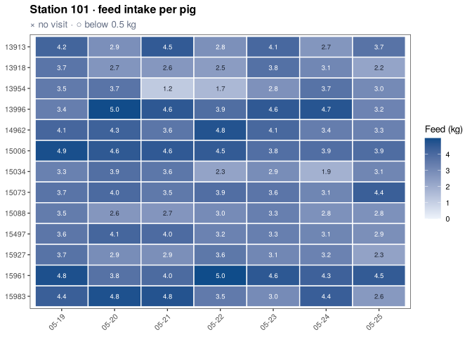

tidypptsdm watches the automatic feeding stations (NEDAP and FIRE) of a pig performance test from day to day. It is the daily companion of tidypptsda, which reads and prepares the data and computes ADG, ADFI and FCR at the end of the test.
- One call,
run_monitor(), gives the daily tables of the last days per station, house, pig and hour, and the alerts of the last day: stations without visits, unidentified visits, drops in feed intake, pigs that did not visit or ate too little. - Days without any visit are kept with zero counts, so a station that stopped recording or a pig that stopped eating is never missing from a table.
-
write_monitor_report()writes an offline HTML report to browse station by station;write_monitor_tables()an Excel workbook with colour scales, or CSV files. -
schedule_monitor()runs it all every morning (Windows Task Scheduler or cron). - Few dependencies: cli, data.table, ggplot2 and tidypptsda.
Documentation (in Chinese): 快速入门, 结果说明, 定时运行, 从 pptsdm 迁移.
Installation
# install.packages("pak")
pak::pak("tony2015116/tidypptsdm")Version 0.1.4 (pptsdm, the earlier API) stays available:
pak::pak("tony2015116/pptsdm@v0.1.4")Example
library(tidypptsdm)
# A folder of exports works too: run_monitor("path/to/exports")
mon <- run_monitor(tidypptsda::nedap, days = 7)
#>
#> ── Preparing NEDAP visits ──────────────────────────────────────────────────────
#> Visits read 31,863
#> └ unidentified (kept, identified = FALSE) 211 0.7%
#> └ body weight 0 (set to NA) 391 1.2%
#> ℹ No pig was seen at more than one station
#> ✔ 30 pigs at 2 stations, 31,863 visits over 97 days 0.2s
#> ℹ No breed column. To use breed in the feed intake model and breed-specific limits, add it with `add_breed()`.
#>
#> ── Monitoring NEDAP stations: 2024-05-19 to 2024-05-25 (7 days) ────────────────
#> ℹ 2 stations, 28 pigs; on 2024-05-25: 366 visits, 84.8 kg feed
#> ✔ No alerts
# One row per station and day
head(mon$stations)
#> location date n_pigs n_visits n_unidentified pct_unidentified
#> 1: 101 2024-05-19 13 192 2 1.0
#> 2: 101 2024-05-20 13 201 4 2.0
#> 3: 101 2024-05-21 13 228 2 0.9
#> 4: 101 2024-05-22 13 214 3 1.4
#> 5: 101 2024-05-23 13 234 1 0.4
#> 6: 101 2024-05-24 13 154 1 0.6
#> occupation_h feed_kg feed_per_pig_kg weight_kg pct_weight_outlier
#> 1: 13.88 50.923 3.903 126.83 3.7
#> 2: 13.38 49.585 3.786 128.02 6.6
#> 3: 12.54 46.784 3.576 128.81 7.1
#> 4: 12.63 44.780 3.429 130.49 6.2
#> 5: 13.22 47.120 3.624 131.21 9.0
#> 6: 12.66 44.424 3.415 132.80 7.2
# Stations in rows, days in columns
wide_table(mon$stations, "feed_kg")
#> location 05-19 05-20 05-21 05-22 05-23 05-24 05-25 total
#> 1: 101 50.923 49.585 46.784 44.780 47.12 44.424 42.030 325.646
#> 2: 102 58.752 56.385 47.664 53.857 50.52 55.163 42.784 365.125
# Pigs that need a look on the last day
mon$pig_summary[status != "ok"]
#> Empty data.table (0 rows and 11 cols): location,responder,days,no_visit_days,low_feed_days,mean_feed_kg...
plot_monitor(mon, "intake", locations = "101")$plot[[1]]
Write the report and the workbook:
write_monitor_report(mon, "monitor/2024-05-25", open = TRUE)
write_monitor_tables(mon, "monitor/2024-05-25")Run it every morning at 7:30 on the export folder:
schedule_monitor("D:/nedap/exports", "D:/nedap/monitor", time = "07:30",
days = 7, house_width = 1)